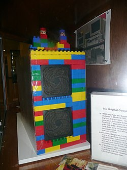
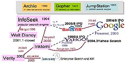

History of Google
Source: https://en.wikipedia.org/wiki/History_of_Google
Category: company
Depth: 1
Summary
Google was officially launched in 1998 by Larry Page and Sergey Brin to market Google Search, which has become the most used web-based search engine. Larry Page and Sergey Brin, students at Stanford University in California, developed a search algorithm first (1996) known as "BackRub", with the help of Scott Hassan and Alan Steremberg. The search engine soon proved successful, and the expanding company moved several times, finally settling at Mountain View in 2003. This marked a phase of rapid growth, with the company making its initial public offering in 2004 and quickly becoming one of the world's largest media companies. The company launched Google News in 2002, Gmail in 2004, Google Maps in 2005, Google Chrome in 2008, and the social network known as Google+ in 2011, in addition to many other products. The company set up a charitable offshoot, Google.org, in 2005. In 2015, Google became the main subsidiary of the holding company Alphabet Inc.
Images




Full Article
Google was officially launched in 1998 by Larry Page and Sergey Brin to market Google Search, which has become the most used web-based search engine. Larry Page and Sergey Brin, students at Stanford University in California, developed a search algorithm first (1996) known as "BackRub", with the help of Scott Hassan and Alan Steremberg. The search engine soon proved successful, and the expanding company moved several times, finally settling at Mountain View in 2003. This marked a phase of rapid growth, with the company making its initial public offering in 2004 and quickly becoming one of the world's largest media companies. The company launched Google News in 2002, Gmail in 2004, Google Maps in 2005, Google Chrome in 2008, and the social network known as Google+ in 2011 (which was shut down in April 2019), in addition to many other products. The company set up a charitable offshoot, Google.org, in 2005. In 2015, Google became the main subsidiary of the holding company Alphabet Inc.
The search engine has gone through many updates in attempts to eradicate search engine optimization.
The name Google is a misspelling of Googol, the number 1 followed by 100 zeros, which was picked to signify that the search engine was intended to provide large quantities of information.
History
Beginnings
Google has its origins in "BackRub", a research project started in 1996 by Larry Page and Sergey Brin when they were both PhD students at Stanford University in Stanford, California. The project initially involved an unofficial "third founder", lead programmer Scott Hassan, who left before Google was officially founded as a company.
While finding a topic for his doctoral thesis in 1995, Page considered exploring the mathematical properties of the World Wide Web by understanding its link structure as a huge graph. His supervisor, Terry Winograd, encouraged him to pick this idea (which Page later recalled as "the best advice I ever got"). Page focused on the problem of finding out which web pages link to a given page, comparing the importance of tracking such backlinks to the role of citations in academic publishing. Page told his ideas to Hassan, who began writing the code to implement Page's ideas.
The research project was nicknamed "BackRub", and it was soon joined by Brin, who was supported by a National Science Foundation Graduate Fellowship. The two had first met in the summer of 1995, when Page was part of a group of potential new students that Brin had volunteered to give a tour around the campus and nearby San Francisco. Both Brin and Page were working on the Stanford Digital Library Project (SDLP), whose goal was "to develop the enabling technologies for a single, integrated and universal digital library". The SDLP was funded through U.S. federal agencies including the National Science Foundation. Brin and Page also received funding from Massive Digital Data Systems (MDDS), a program by the Central Intelligence Agency (CIA) and the National Security Agency (NSA) to fund the improvement of intelligence databases on the disorganized World Wide Web.
Page's web crawler began exploring the web in March 1996, with Page's own Stanford home page serving as the only starting point. Brin and Page developed the PageRank algorithm to convert the backlink data they gathered for a given web page into a measure of importance. The pair realized that a search engine based on PageRank would produce better results than existing search engines, which ranked results according to how many times the search term appeared on a page.
Convinced that the pages with the most links to them from other highly relevant Web pages must be the most relevant pages associated with the search, Page and Brin tested their thesis as part of their studies and laid the foundation for their search engine. The first version of Google was released in August 1996 on the Stanford website and used nearly half of Stanford's entire network bandwidth.
Some Rough Statistics (from August 29, 1996)
Total indexable HTML urls: 75.2306 Million
Total content downloaded: 207.022 gigabytes
...
BackRub is written in Java and Python and runs on several Sun Ultras and Intel Pentiums running Linux. The primary database is kept on a Sun Ultra II with 28GB of disk. Scott Hassan and Alan Steremberg have provided a great deal of very talented implementation help. Sergey Brin has also been very involved and deserves many thanks.
— Larry Page
Scott Hassan and Alan Steremberg were cited by Page and Brin as being critical to the development of Google. Rajeev Motwani and Terry Winograd later co-authored with Page and Brin the first paper about the project, describing PageRank and the initial prototype of the Google search engine, published in 1998. Héctor García-Molina and Jeff Ullman were also cited as contributors to the project.
PageRank was influenced by a similar page-ranking and site-scoring algorithm earlier used for RankDex, developed by Robin Li in 1996. Larry Page's patent for PageRank filed in 1998 includes a citation to Li's earlier patent. Li later went on to create the Chinese search engine Baidu in 2000.
Late 1990s
Originally the search engine used Stanford's website with the domains google.stanford.edu and z.stanford.edu. The domain google.com was registered on September 15, 1997. They formally incorporated their company, Google, on September 4, 1998, in their friend Susan Wojcicki's garage in Menlo Park, California. Wojcicki eventually became an executive at Google and CEO at YouTube. Page invited Craig Nevill-Manning, whom he had met while Nevill-Manning was a postdoctoral fellow at Stanford, to join Google. Nevill-Manning declined and joined years later.
Both Brin and Page had been against using advertising pop-ups in a search engine, or an "advertising funded search engines" model, and they wrote a research paper in 1998 on the topic while still students. They changed their minds early on and allowed simple text ads.
By the end of 1998, Google had an index of about 60 million pages. The home page was still marked "BETA", but an article in Salon.com already argued that Google's search results were better than those of competitors like Hotbot or Excite.com, and praised it for being more technologically innovative than the overloaded portal sites (like Yahoo!, Excite.com, Lycos, Netscape's Netcenter, AOL.com, Go.com and MSN.com) which, during the growing dot-com bubble, were seen as "the future of the Web", especially by stock market investors.
Early in 1999, Brin and Page decided they wanted to sell Google to Excite. They went to Excite CEO George Bell and offered to sell it to him for $1 million. He rejected the offer. Vinod Khosla, one of Excite's venture capitalists, talked the duo down to $750,000, but Bell still rejected it.
In March 1999, the company moved into offices at 165 University Avenue in Palo Alto, home to several other noted Silicon Valley technology startups. After quickly outgrowing two other sites, the company leased a complex of buildings in Mountain View at 1600 Amphitheatre Parkway from Silicon Graphics (SGI) in 2003. The company has remained at this location ever since, and the complex has since become known as the Googleplex (a play on the word googolplex, a number that is equal to 1 followed by a googol of zeros). In 2006, Google bought the property from SGI for US$319 million.
2000s
The Google search engine attracted a loyal following among the growing number of Internet users, who liked its simple design. In 2000, Google began selling advertisements associated with search keywords. The ads were text-based to maintain an uncluttered page design and to maximize page loading speed. Keywords were sold based on a combination of price bid and click-throughs, with bidding starting at $.05 per click. This model of selling keyword advertising was first pioneered by Goto.com, an Idealab spin-off created by Bill Gross. When the company changed names to Overture Services, it sued Google over alleged infringements of the company's pay-per-click and bidding patents. Overture Services would later be bought by Yahoo! and renamed Yahoo! Search Marketing. The case was then settled out of court; Google agreed to issue shares of common stock to Yahoo! in exchange for a perpetual license. While many of its dot-com rivals failed in the new Internet marketplace, Google quietly rose in stature while generating revenue.
Google's declared code of conduct is "Don't be evil", a phrase which they went so far as to include in their prospectus (aka "S-1") for their 2004 IPO, noting that "We believe strongly that in the long term, we will be better served—as shareholders and in all other ways—by a company that does good things for the world even if we forgo some short term gains."
In February 2003, Google acquired Pyra Labs, owner of the Blogger website. The acquisition secured the company's competitive ability to use information gleaned from blog postings to improve the speed and relevance of articles contained in a companion product to the search engine Google News.
In February 2004, Yahoo! dropped its partnership with Google, providing an independent search engine of its own. This cost Google some market share, yet Yahoo!'s move highlighted Google's own distinctiveness. The verb "to google" has entered a number of languages (first as a slang verb and now as a standard word), meaning "to perform a web search" (a possible indication of "Google" becoming a genericized trademark).
After the IPO, Google's stock market capitalization rose greatly and the stock price more than quadrupled. On August 19, 2004, the number of shares outstanding was 172.85 million while the "free float" was 19.60 million (which makes 89% held by insiders). Google has a dual-class stock structure in which each Class B share gets ten votes compared to each Class A share getting one. Page said in the prospectus that Google has "a dual-class structure that is biased toward stability and independence and that requires investors to bet on the team, especially Sergey and me."
In June 2005, Google was valued at nearly $52 billion, making it one of the world's biggest media companies by stock market value.
On August 18, 2005 (one year after the initial IPO), Google announced that it would sell 14,159,265 (another mathematical reference as π ≈ 3.14159265) more shares of its stock to raise money. The move would double Google's cash stockpile to $7 billion. Google said it would use the money for "acquisitions of complementary businesses, technologies or other assets".
With Google's increased size came more competition from large mainstream technology companies. One such example is the rivalry between Microsoft and Google. Microsoft had been touting its Bing search engine to counter Google's competitive position. Furthermore, the two companies are increasingly offering overlapping services, such as webmail (Gmail vs. Hotmail), search (both online and local desktop searching), and other applications (for example, Microsoft's Windows Live Local competes with Google Earth). In addition to an Internet Explorer replacement, Google designed its own Linux-based operating system called ChromeOS to directly compete with Microsoft Windows. There were also rumors of a Google web browser, fueled much by the fact that Google was the owner of the domain name "gbrowser.com".[citation needed] These were later proven when Google released Google Chrome. This corporate feud boiled over into the courts when Kai-Fu Lee, a former vice-president of Microsoft, quit Microsoft to work for Google. Microsoft sued to stop his move by citing Lee's non-compete contract (he had access to much sensitive information regarding Microsoft's plans in China). Google and Microsoft reached a settlement out of court on December 22, 2005, the terms of which are confidential.
Click fraud also became a growing problem for Google's business strategy. Google's CFO George Reyes said in a December 2004 investor conference that "something has to be done about this really, really quickly, because I think, potentially, it threatens our business model."
While the company's primary market is in the web content arena, Google has experimented with other markets, such as radio and print publications. On January 17, 2006, Google announced that it had purchased the radio advertising company dMarc, which provides an automated system that allows companies to advertise on the radio. Google also began an experiment in selling advertisements from its advertisers in offline newspapers and magazines, with select advertisements in the Chicago Sun-Times.
During the third quarter of 2005 Google Conference Call, Eric Schmidt said, "We don't do the same thing as everyone else does. And so if you try to predict our product strategy by simply saying well so and so has this and Google will do the same thing, it's almost always the wrong answer. We look at markets as they exist and we assume they are pretty well served by their existing players. We try to see new problems and new markets using the technology that others use and we build."
After months of speculation, Google was added to the Standard & Poor's 500 index (S&P 500) on March 31, 2006. Google replaced Burlington Resources, a major oil producer based in Houston that had been acquired by ConocoPhillips. The day after the announcement Google's share price rose by 7%.
In 2008, Google launched Knol, their own equivalent of Wikipedia, which failed four years later.
Use of cookies
Although Google was already deriving the vast majority of its income from advertising at the time of its 2004 IPO, it did not use any HTTP cookie-based web tracking until 2007. By 2006, Google's Ad revenue was already facing signs of decline, as "a growing number of advertisers were refusing to buy display ads from Google." The Great Recession led Google to institute a hiring freeze.
In 2007, Google agreed to buy DoubleClick for $3.1 billion, marking the start of its use of cookie-based tracking. Even with the purchase, Google only ended up with a 3% revenue in the second quarter of 2009, in the depth of the recession.
Google initially separated the browsing habits collected from AD tracking from data collected by its other services by default. Google removed this last layer of protection in 2016, making its tracking personally-identifiable.
2010s
In 2011, the company launched Google+, its fourth foray into social networking, following Google Buzz (launched 2010, retired in 2011), Google Friend Connect (launched 2008, retired by March 1, 2012), and Orkut (launched in 2004, retired in September 2014)
As of November 2014, Google operated over 70 offices in more than 41 countries.
In 2015, Google reorganized its interests as a holding company, Alphabet Inc., with Google as its leading subsidiary. Google continued to serve as the umbrella for Alphabet's Internet interests. On September 1, 2017, Google Inc. announced its plans of restructuring as a limited liability company, Google LLC, as a wholly owned subsidiary of XXVI Holdings, Inc., which is formed as a subsidiary of Alphabet Inc. to hold the equity of its other subsidiaries, including Google LLC and other bets.
Between 2018 and 2019, tensions between the company's leadership and its workers escalated as staff protested company decisions on internal sexual harassment, Dragonfly, a censored Chinese search engine, and Project Maven, a military drone artificial intelligence, which had been seen as areas of revenue growth for the company. On 25 October 2018, The New York Times published an exposé, "How Google Protected Andy Rubin, the 'Father of Android'". The company subsequently announced that "48 employees have been fired over the last two years" for sexual misconduct. On 1 November 2018, Google employees staged a global walk-out to protest the company's handling of sexual harassment complaints, including the golden parachute exit of former executive Andy Rubin; more than 20,000 employees and contractors participated. CEO Sundar Pichai was reported to be in support of the protests.
On March 19, 2019, Google announced that it would enter the video game market, launching a cloud gaming platform called Google Stadia.
On June 3, 2019, the United States Department of Justice reported that it would investigate Google for antitrust violations. This led to the filing of an antitrust lawsuit in October 2020, on the grounds the company had abused a monopoly position in the search and search advertising markets.
In December 2019, former PayPal chief operating officer Bill Ready became Google's new commerce chief. Ready's role will not be directly involved with Google Pay.
2020s
| This section needs to be updated. Please help update this article to reflect recent events or newly available information. (April 2023) |
In April 2020, Google announced several cost-cutting measures due to the COVID-19 pandemic. Such measures included slowing down hiring for the remainder of 2020, except for a small number of strategic areas, recalibrating the focus and pace of investments in areas like data centers and machines, and non-business essential marketing and travel.
Google and Apple collaborated on the development of smartphone-based contact tracing solutions to address the COVID-19 pandemic. Prominent examples of government initiatives in this field include Singapore's TraceTogether and Australia's COVID Safe apps. TraceTogether was notably the first national Bluetooth contact tracing app to be launched globally, debuting in March 2020.
The 2020 Google services outages disrupted Google services: one in August that affected Google Drive among others, another in November affecting YouTube, and a third in December affecting the entire suite of Google applications. All three outages were resolved within hours.
In January 2021, the Australian Government proposed legislation that would require Google and Facebook to pay media companies for the right to use their content. In response, Google threatened to close off access to its search engine in Australia.
In March 2021, Google reportedly paid $20 million for Ubisoft ports on Google Stadia. Google spent "tens of millions of dollars" on getting major publishers such as Ubisoft and Take-Two to bring some of their biggest games to Stadia.[citation needed]
In April 2021, The Wall Street Journal reported that Google ran a years-long program called 'Project Bernanke' that used data from past advertising bids to gain an advantage over competing ad services. This was revealed in documents concerning the antitrust lawsuit filed by ten US states against Google in December.
In June 2023, Google stated it would remove Canadian news links from its services throughout the country due to legislation from the Canadian government (Bill C-11) that would require Google and other online platforms such as Facebook to pay for news articles being shown on their platforms.
In September 2024, Google and its parent company Alphabet Inc. were fined 2.42 billion euros by the European Commission for an antitrust case surrounding Google's shopping service. The decision was later upheld by both the General Court (European Union) and the European Court of Justice.
In October 2024, the U.S. Department of Justice (DOJ) formally proposed a range of structural and behavioral remedies against Google, including the potential break-up of the company. These proposals explored banning default search placement payments, regulating the use of artificial intelligence in search results, mandating licensing of Google’s search data to competitors, and requiring increased transparency in online ad pricing.
In November 2024, the U.S. Department of Justice (DoJ) urged a federal court to impose significant changes on Google to address its monopoly in online search. The proposed measures included forcing Google to sell its Chrome browser, sharing data and search results with competitors, and implementing various other restrictions. The DoJ also sought to prohibit Google from re-entering the browser market for five years, selling its Android OS if needed, and halting investments in rival search engines or AI. It also pushed to end exclusive deals where Google paid device makers like Apple to set its search engine as the default. Google called these measures excessive and harmful for consumers, vowing to appeal and a trial was set for April 2025.
In December 2024, Google responded with a counter‑proposal advocating for a narrower, three‑year ban on exclusive default search engine deals, including its long-standing arrangement with Apple. Rather than accepting divestitures of Chrome or Android, Google offered increased flexibility for browser developers and annual renegotiation of default search engine status. Privacy-focused competitors like DuckDuckGo criticized this as inadequate and insufficient to restore market competition. Both parties were expected to submit final remedy proposals ahead of the scheduled remedies trial in April 2025.
In early February 2025, Google announced it was ending its targets for minority recruitment and reevaluating other diversity, equity, and inclusion efforts.
In April 2025, the remedies trial commenced in Washington, D.C. before Judge Amit P. Mehta. The DOJ argued for substantial structural reforms and ongoing oversight, while Google maintained that such measures were excessive and would hinder innovation in the digital and AI sectors.
In September 2025, Mehta ruled that Google would not be required to divest of Chrome or Android, but could no longer include search in exclusive contracts. Mehta also ruled that Google would be required to share certain search index and user interaction data with competitors.
In April 2026, Alphabet Google's parent company announced a $180 billion spending plan for the company for AI infrastructure, data centers, and servers. Mainly for the development of Google's AI Gemini.
Financing and initial public offering
The first funding for Google as a company was secured in August 1998 in the form of a US$100,000 contribution from Andy Bechtolsheim, co-founder of Sun Microsystems, given to a corporation which did not yet exist.
On June 7, 1999, a round of equity funding totalling $25 million was announced, the major investors being rival venture capital firms Kleiner, Perkins, Caufield & Byers and Sequoia Capital. While Google still needed more funding for their further expansion, Brin and Page were hesitant to take the company public, despite their financial issues. They were not ready to give up control over Google.
Following the closing of the $25 million financing round, Sequoia encouraged Brin and Page to hire a CEO. Brin and Page ultimately acquiesced and hired Eric Schmidt as Google's first CEO in August 2001.
In October 2003, while discussing a possible initial public offering of shares (IPO), Microsoft approached the company about a possible partnership or merger. The deal never materialized. In January 2004, Google announced the hiring of Morgan Stanley and Goldman Sachs Group to arrange an IPO. The IPO was projected to raise as much as $4 billion.
Google's initial public offering took place on August 19, 2004. A total of 19,605,052 shares were offered at a price of $85 per share. Of that, 14,142,135 (another mathematical reference as √2 ≈ 1.4142135) were floated by Google and 5,462,917 by selling stockholders. The sale raised US$1.67 billion, and gave Google a market capitalization of more than $23 billion. Many of Google's employees became instant paper millionaires. Yahoo!, a competitor of Google, also benefited from the IPO because it owned 2.7 million shares of Google.
Following the company's IPO in 2004, founders Sergey Brin and Larry Page and CEO Eric Schmidt requested that their base salary be cut to $1. Subsequent offers by the company to increase their salaries were turned down, primarily because their main compensation continues to come from owning stock in Google. Before 2004, Schmidt made $250,000 per year, and Page and Brin each received an annual salary of $150,000.
There were concerns that Google's IPO would lead to changes in company culture. Reasons ranged from shareholder pressure for employee benefit reductions to the fact that many company executives would become instant paper millionaires. As a reply to this concern, co-founders Brin and Page promised in a report to potential investors that the IPO would not change the company's culture.
The company was listed on the NASDAQ stock exchange under the ticker symbol GOOG. When Alphabet was created as Google's parent company, it retained Google's stock price history and ticker symbol.
Name
The name "Google" originated from a misspelling of "googol", which refers to the number represented by a 1 followed by one-hundred zeros. Page and Brin write in their first paper on PageRank: "We chose our systems name, Google, because it is a common spelling of googol, or 10100 and fits well with our goal of building very large-scale search engines."
There are uses of the name going back at least as far as the creation of the comic strip character Barney Google in 1919. British children's author Enid Blyton used the phrase "Google Bun" in The Magic Faraway Tree (published 1941) and The Folk of the Faraway Tree (published 1946), and called a clown character "Google" in Circus Days Again (published 1942). In April 1953 Clifford D Simaks short story "Retrograde Evolution" was published in Science Fiction Plus magazine wherein an alien race called "Googles" evolves from savages to geniuses overnight. There is also the Googleplex Star Thinker from Douglas Adams' The Hitchhiker's Guide to the Galaxy. Hank McCoy, The Beast, uses the word (spelled Google) in Uncanny X-Men #308. In March 1996, a business called Groove Track Productions applied for a United States trademark for "Google" for various products including several categories of clothing, stuffed toys, board games, and candy. The firm abandoned its application in July 1997.
Having found its way increasingly into everyday language, the verb "google" was added to the Merriam Webster Collegiate Dictionary and the Oxford English Dictionary in 2006, meaning "to use the Google search engine to obtain information on the internet." The use of the term itself reflects their mission to organize a seemingly infinite amount of information on the web. The first use of "Google" as a verb in pop culture happened on the TV series Buffy the Vampire Slayer, in 2002. In November 2009, the Global Language Monitor named "Google" No. 7 on its Top Words of the Decade list. In December 2009 the BBC highlighted Google in their "Portrait of the Decade (Words)" series. In May 2012, David Elliott filed a complaint against Google, Inc. claiming that Google's once distinctive mark GOOGLE® has become generic and lacks trademark significance due to its common use as a transitive verb. After losing to Google in UDRP proceedings involving many "Google-related" domain name registrations that he owns, Elliott later sought a declaratory judgment that his domain names are rightfully his, that they do not infringe any trademark rights Google may own, and that all Google's registered GOOGLE® marks should be cancelled since "Google" is now a common generic word worldwide that means "to search the internet."
Partnerships
Google has worked with several corporations, in order to improve production and services.
On September 28, 2005, Google announced a long-term research partnership with NASA which would involve Google building a 1,000,000-square-foot (93,000 m2) R&D center at NASA's Ames Research Center. NASA and Google are planning to work together on a variety of areas, including large-scale data management, massively distributed computing, bio-info-nano convergence, and encouragement of the entrepreneurial space industry. The new building would also include labs, offices, and housing for Google engineers. In October 2006, Google formed a partnership with Sun Microsystems to help share and distribute each other's technologies. As part of the partnership Google will hire employees to help the open source office program OpenOffice.org.
Time Warner's AOL unit and Google unveiled an expanded partnership on December 21, 2005, including an enhanced global advertising partnership and a US$1 billion investment by Google for a 5% stake in AOL. As part of the collaboration, Google plans to work with AOL on video search and offer AOL's premium video service within Google Video. This did not allow users of Google Video to search for AOL's premium-video services. Display advertising throughout the Google network will also increase.
In August 2006, Google signed a $900 million offer with News Corp.'s Fox Interactive Media unit to provide search and advertising on MySpace and other News Corp. websites including IGN, AmericanIdol.com, Fox.com, and Rotten Tomatoes, although Fox Sports is not included as a deal already exists between News Corp. and MSN.
On December 6, 2006, British Sky Broadcasting released details of a Sky and Google alliance. This includes a feature where Gmail will link with Sky and host a mail service for Sky, incorporating the email domain "@sky.com".
In 2007, Google displaced America Online as a key partner and sponsor of the NORAD Tracks Santa program. Google Earth was used for the first time to give visitors to the website the impression that they were following Santa Claus' progress in 3-D. The program also made its presence known on YouTube in 2007 as part of its partnership with Google.
In 2008, Google developed a partnership with GeoEye to launch a satellite providing Google with high-resolution (0.41 m monochrome, 1.65 m color) imagery for Google Earth. The satellite was launched from Vandenberg Air Force Base on September 6, 2008. Google also announced in 2008 that it was hosting an archive of Life Magazine's photographs.
In January 2009, Google announced a partnership with the Pontifical Council for Social Communications, allowing the Pope to have his own channel on YouTube.
In January 2013, Google announced a partnership with Kia Motors and Hyundai. The partnership integrates Google Maps and Place into new car models to be released later in 2013.
The Alliance for Affordable Internet (A4AI) was launched in October 2013; Google is part of the coalition of public and private organizations that also includes Facebook, Intel, and Microsoft. Led by Sir Tim Berners-Lee, the A4AI seeks to make Internet access more affordable so that access is broadened in the developing world, where only 31% of people are online. Google will help to decrease Internet access prices so they fall below the UN Broadband Commission's worldwide target of 5% of monthly income.
On September 21, 2017, HTC announced a "cooperation agreement" in which it would sell non-exclusive rights to certain intellectual property, as well as smartphone talent, to Google for $1.1 billion.
See also
- Timeline of Google Search
- Criticism of Google
- Google logo
- List of Google Easter eggs
- Timeline of Mountain View, California, headquarters of Google since 1999
References
Further reading
- Auletta, Ken (2009). Googled: The End of the World as We Know It. New York: Penguin Press. ISBN 978-1-59420-235-3. OCLC 318411527.
- Battelle, John (2005). The Search: How Google and Its Rivals Rewrote the Rules of Business and Transformed Our Culture. New York: Portfolio. ISBN 1-59184-088-0. OCLC 72691962.
- Bottando, Evelyn. "Hedging the commons: Google Books, libraries, and open access to knowledge" (PhD Dissertation, University of Iowa; ProQuest Dissertations & Theses, 2012. 3526789).
- Gray, Joanne Elizabeth. Google Rules: The History and Future of Copyright Under the Influence of Google (Oxford University Press, 2020)
- Levy, Steven (2011). In the Plex: How Google Thinks, Works, and Shapes Our Lives. Simon and Schuster. ISBN 978-1-41659-671-4.
- Marcum, Deanna, and Roger C. Schonfeld. Along Came Google: A History of Library Digitization (Princeton University Press, 2021)
- Redding, Anna Crowley. Google It: A History of Google (2018)
- Stross, Randall (2008). Planet Google: One Company's Audacious Plan to Organize Everything We Know. New York: Free Press. ISBN 978-1-4165-4691-7. OCLC 261376729.
- Vise, David A; Malseed, Mark (2005). The Google Story. Delacorte Press. ISBN 978-0-55380-457-7. OCLC 607806212.
- Yeo, ShinJoung (2023). Behind the Search Box: Google and the Global Internet Industry. U of Illinois Press. ISBN 0252087127 online
External links
- Google Corporate History (official)
- David Hart: On the Origins of Google National Science Foundation, August 17, 2004
| - v - t - e Google | |
|---|---|
| a subsidiary of Alphabet | |
| Company | |
| Development | |
| Software | |
| Hardware | |
| - v - t - e Litigation | |
| Related | |
| Italics denote discontinued products. - Category - Outline |